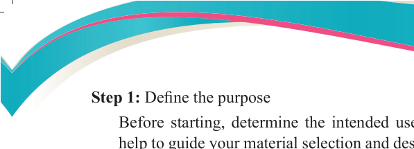
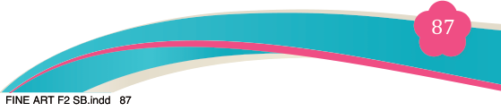
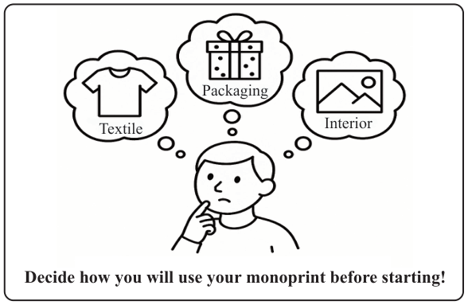
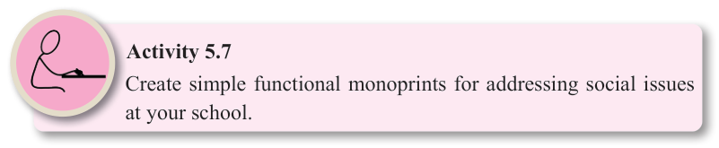

Fine Art for Secondary Schools

87

Student’s Book Form Two
Step 1: Define the purpose

Before starting, determine the intended use of your monoprint. This will
help to guide your material selection and design approaches. Some common applications include textile, package or interior decoration (see illustration below in Figure 5.5)

Textile
Decide how you will use your monoprint before starting!
Interior
Packaging

Figure 5.5: Shows an intended use of a monoprint
Understanding the use and function of the final product influences crucial decisions
in the process, such as the choice of monoprint, material and techniques, such as designing monoprint for greeting cards.
For example, if the monoprint is meant for a greeting card, understanding that the purpose is to convey joy and celebration will guide both the design and the
technique. The design should feature joyful elements such as vibrant flowers, playful
illustrations or festive motifs like balloons and hearts, avoiding any sad imagery.
In terms of technique, for greeting cards, a softer, more fluid approach might be chosen, such as using a hand-painted monoprint technique that creates delicate,
organic textures or fluid shapes. Alternatively, bold and striking colour applications
using a brayer or a stencil might be employed to achieve a vibrant and eye-catching
effect. The choice of technique will ensure that the design not only suits the
emotional tone but also works well with the size and format of the greeting card.

Activity 5.7
Create simple functional monoprints for addressing social issues at your school.
04/08/2025 13:54